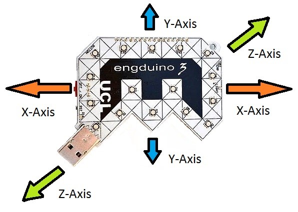
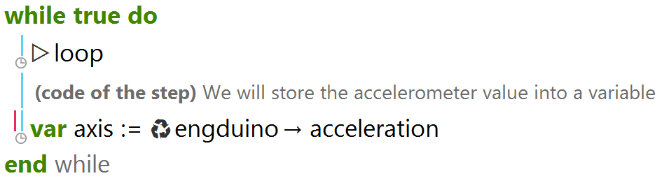
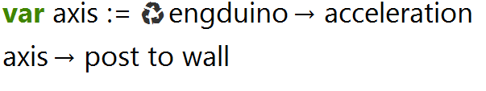
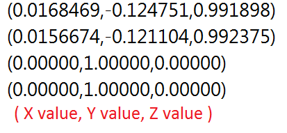
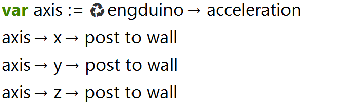
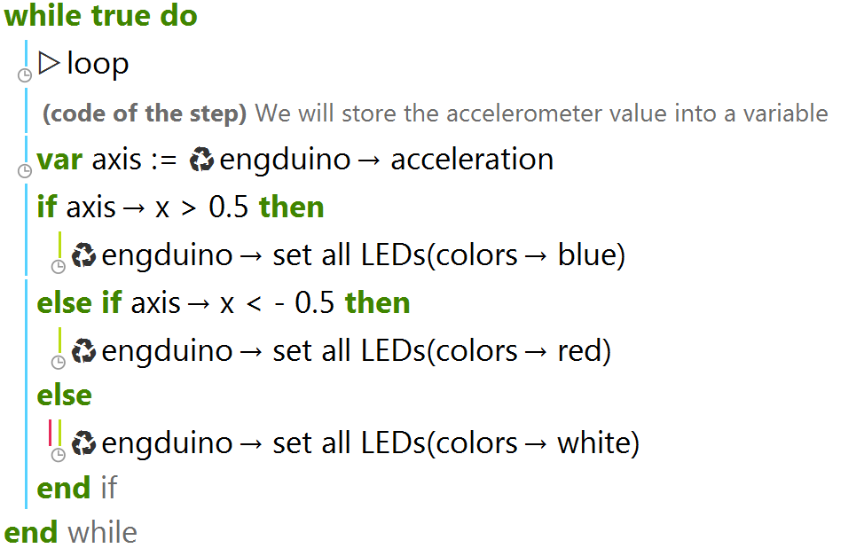
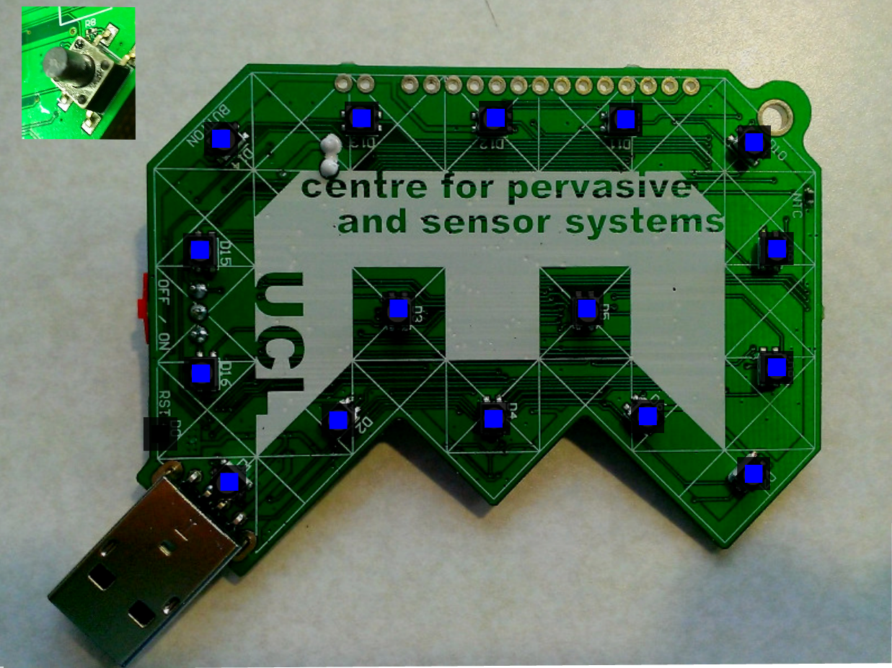
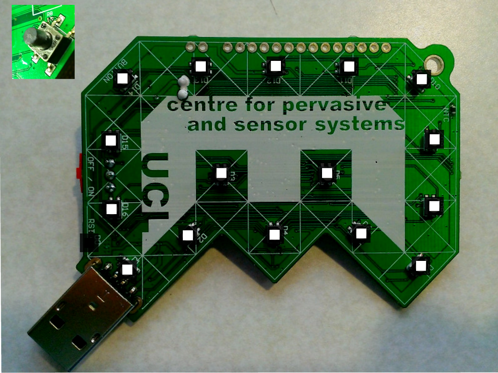

Engduino Accelerometer
The accelerometer on the Engduino measures the acceleration on the Engduino. It is able to measure acceleration in three dimension ( In 3-Axis known as X,Y,Z)
In this Engduino lesson, we will be covering the following points:
- Storing the accelerometer readings into a variable.
- Read and understand the accelerometer readings in Engduino.
- Using the accelerometer readings to perform different task.
Store Accelerometer Readings
In order for us to read the accelerometer readings, we need to store the accelerometer readings into a variable first.
In the codes above, we stored the engduino accelerometer readings into a variable called 'axis'
*Note that the variable 'axis' will store 3 different values(X,Y,Z) with one single line of code.
Read Accelerometer Readings
To get the readings of the Engduino, we simply output the variable containing the readings of the accelerometer
And the output is:
When you run the codes, you will get the above output. The readings shows the Engduino accelerometer readings in term of ( X , Y , Z ). The highest and lowest value that X,Y,Z can get is ±1.
*Note that the Y-axis reading is 1.0 by default? That's because of gravity acting downwards relative to the Engduino.
We can also read the value of X, Y, Z individually using the codes below
Using Accelerometer Reading to Perform an Action
Now that we know how to get the accelerometer readings, we will use the readings along with 'if/else' statement to perform different actions.
In the code above, we use the accelerometer X-axis reading to change the LEDs colour on the Engduino. The LEDs will become blue when the accelerometer X-axis reading is above 0.5.
If the accelerometer X-axis reading is between -0.5 and 0.5 (-0.5 <= X <= 0.5), the LEDs will become white, and if the X-axis reading is below -0.5, the LEDs will become red.
When X-axis reading is above 0.5 ( Move right )
When X-axis reading is between -0.5 and 0.5

When X-axis reading is below -0.5 ( Move left )
Conclusion
- Accelerometer on the Engduino measures three dimension of acceleration.
- Readings stored in a variable can be shown as ( X, Y, Z) or as individual axis reading.
- Using individual axis-reading, we can perform a variety of actions.